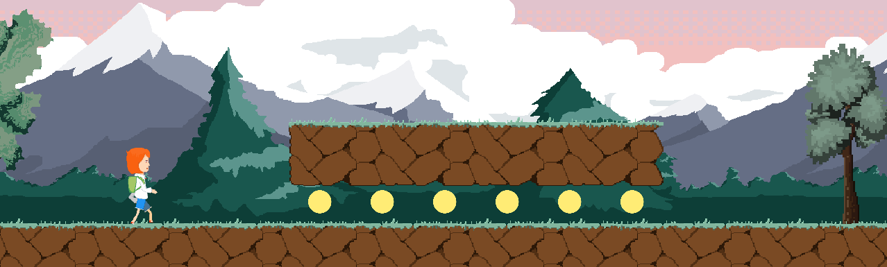
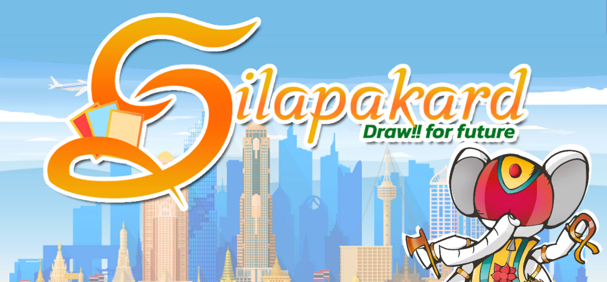
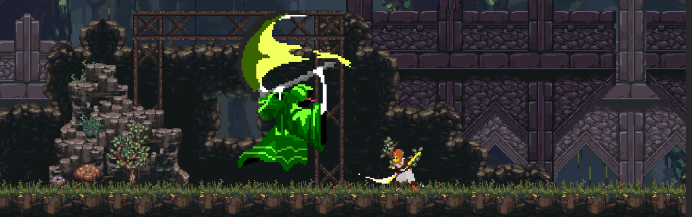
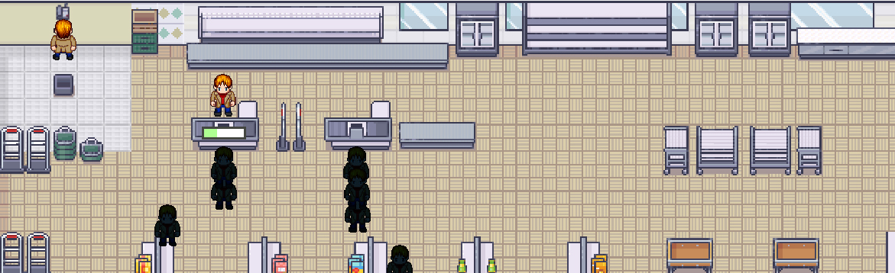
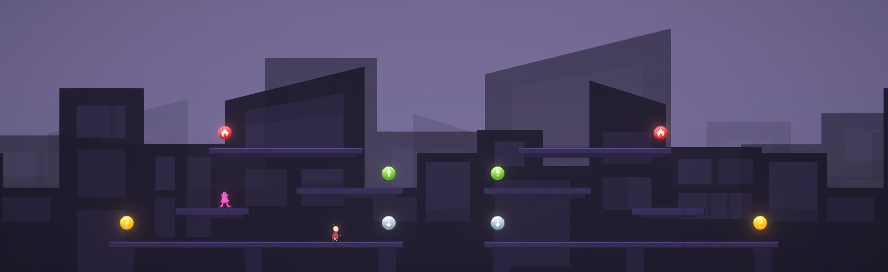
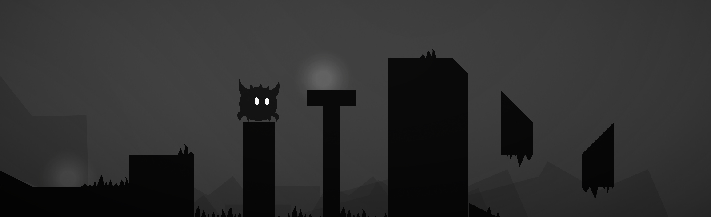
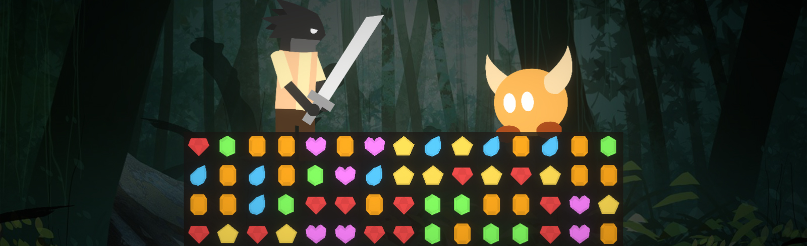
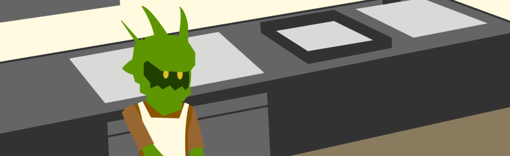

Projects
Until Die

Until Die is an endless turn-based strategy minigame. You will play as a Butterfly, struggling in the last moment of its life. Being chased within a spider web that nothing can escape from, will you choose to give up and become the prey, or will you defy the rule of nature?
Until Die is an entry submitted in "Mini Jam 123: Web" from itch.io along with 221 other teams. It's acheived sixth place for highest rating overall, fouth for a game concept and fifth for a game presentation!
Through The Seasons
Through the Seasons is a 2D casual endless runner game with a theme of seasons. You are a traveler in a colorful changing world. Run until you're tired and rest for a while before starting your journey again.
Silapakard: Draw! for the Future
Silapakard is a strategy-puzzle card game featuring futuristic characters from multiple literatures. Confront a formiddable enemy and use cards to solve puzzles with their spacial effects!
Silpakard is an entry submitted in "FIT Game Jam 2022" from itch.io
Godchild
Godchild is a Metroidvania game with Action-RPG aspects. Play as one of the choosen Godchilds with different skills and elemental powers. Navigate the post-apocalypic regions and confront fearsome enemies!
Madmart
Madmart is an Arcade Time-Management game, where up to 4 players can work together in the convenience store with many types of chaotic customers to deal with. Earn your income as much as possible within 10 minutes!
Matica
Matica is a Futuristic Post-apocalyptic Multiplayer Battle Royale game, where up to 20 players can play against! The game offers more than 10 levels - Survival, Team and Final. Each player needs to follow level rules and survive rounds until you are the final player standing! Failing to do so will get you Eliminated!
Matica has been qualified in Proposal Round of National Software Contest 2021, it is currently work-in-progress.
The Black Goo
The Black Goo is a small project used to illustrate the artistic skills of a developer, it is originally planned to be a Metroidvania game where players can explore the huge interconnected world with current abilities.
Diamonica Episode II
Diamonica is a prototype of a Match-3 game, where players need to match gems properly to attack opponent, different gems giving different stats! In the future, the game will offer various characters with different skills!
Roque & His Engineer
Roque & His Engineer is a mock-up 2D commercial animation. There are 2 episodes in this animation - "The Giant Iron" and "Coffee Maker" talking about Roque - a robot that could do anything except ironing and making coffee because it would cause many problems.